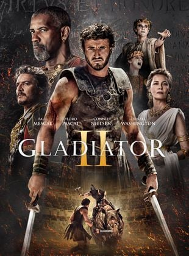

Somos un grupo de personas aficionadas al cine que queremos aportar un poco de cultura general
e información sobre este inmenso mundo lleno de variedades. Os ofrecemos informacion sobre cine y televisión,
estrenos, novedades, etc. Esperamos que disfruteis navegando por nuestra web.
Actualidad
"No estamos haciendo una nueva versión toma por toma": el director del live action de 'Cómo entrenar a tu dragón' se defiende de las críticas
Una elección de casting ha sido objeto de controversia, pero es la misma cantinela de siempre
Es una de las sagas animadas más queridas de la pasada década y, siguiendo los pasos de la
estrategia del 'live action' que tan bien le está funcionando a Disney, Cómo entrenar a tu
dragón también será objeto de su propia adaptación como una película de acción real.
Con actores de carne y hueso cabalgando sobre dragones.
Leer mas

"Quiero volver de entre los muertos": Ridley Scott revela que Russell Crowe llegó a pedirle
estar en 'Gladiator 2'
La secuela de la película que le brindó el Oscar, 'Gladiator II', ya está en cines y es el
joven actor Paul Mescal quien ha recogido el testigo 24 años después
Han pasado 15 años desde que Lucio vio cómo su tío Cómodo y su padre Máximo morían en la
arena del Coliseo. Ahora, en Gladiator II, ese niño es un hombre adulto que recorre el mismo
camino que el personaje de Russell Crowe en Gladiator: de hombre libre a esclavo y de esclavo
a gladiador. En nuestro mundo, son 24 los años que los fans han tenido que esperar para ver la
secuela de Ridley Scott y ese niño ahora adulto no es el mismo que dio vida a Lucio en la
primera entrega.
Leer mas

El equipo de 'Wicked' plantó 9.000.000 tulipanes reales para la película:
esto es lo que ha pasado con las flores tras el rodaje
La película protagonizada por Ariana Grande y Cynthia Erivo ya ha recaudado más
de 164 millones de dólares en taquilla
La esperada adaptación del exitoso musical de Broadway, Wicked, dirigida por Jon M. Chu,
está arrasando en taquilla desde su estreno el pasado 22 de noviembre. Con más de 164 millones
de dólares recaudados a nivel mundial, la película se ha convertido en el mejor estreno de una
adaptación de musical en la historia. En Estados Unidos, Wicked ha superado incluso a Gladiator II,
pasando por la derecha al mismísimo Paul Mescal.
Leer mas